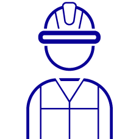

Le programme de PSE
Quatre thématiques
Obligatoire en SE2
A
L'individu responsable de son capital santé
B
L'individu responsable dans son environnement
Obligatoire en SE2

CL'individu dans son milieu professionnel, impliqué dans la prévention des risques
D
L'individu consommateur averti
SE2 : au moins trois thématiques, dont A et C obligatoirement. Le module C8 (SST) relève de la SE1.